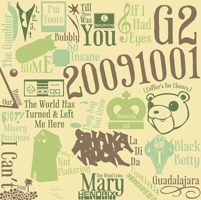
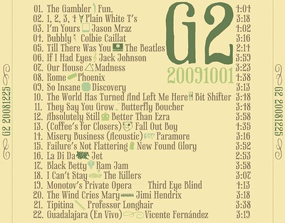

G2 20091001

We closed on our first home yesterday. We're thrilled. Due to an upcoming anniversary, the new home, and because I think Maria is wonderful, I made another G2 album. I know. I should post less about projects and more about my kids.
Cecilia went on her first sleep-over the other night. I wasn't really ready for it. I missed her. Becky talks constantly. One of our favorite words to have her say is “Moist.” It's cute, along with several other words, as long as she's not screaming. She loves to talk and sing... and purses.
I'll move on to the details of this thing. Read on to be fascinated.
There isn't really a theme to this album. I recently re-discovered something called the radio, which plays music free of charge. I had forgotten that something like that existed. With that in mind, here's the track list:
| Track | Title-Artist | Duration |
|---|---|---|
| 01 | The Gambler - Fun. | 4:04 |
| 02 | 1, 2, 3, 4 - Plain White T's | 3:18 |
| 03 | I'm Yours - Jason Mraz | 4:02 |
| 04 | Bubbly - Colbie Caillat | 3:16 |
| 05 | Till There Was You - The Beatles | 2:14 |
| 06 | If I Had Eyes - Jack Johnson | 3:59 |
| 07 | Our House - Madness | 3:23 |
| 08 | Rome - Phoenix | 4:38 |
| 09 | So Insane - Discovery | 3:13 |
| 10 | The World Has Turned And Left Me Here - Bit Shifter | 3:48 |
| 11 | They Say You Grow - Butterfly Boucher | 3:48 |
| 12 | Absolutely Still - Better Than Ezra | 3:58 |
| 13 | (Coffee's for Closers) - Fall Out Boy | 4:35 |
| 14 | Misery Business (Acoustic) - Paramore | 3:16 |
| 15 | Failure's Not Flattering - New Found Glory | 3:52 |
| 16 | La Di Da - Jet | 2:53 |
| 17 | Black Betty - Ram Jam | 3:58 |
| 18 | I Can't Stay - The Killers | 3:07 |
| 19 | Monotov's Private Opera - Third Eye Blind | 4:13 |
| 20 | The Wind Cries Mary - Jimi Hendrix | 3:18 |
| 21 | Tipitina- Professor Longhair | 3:38 |
| 22 | Guadalajara (En Vivo) - Vicente Fernández | 3:19 |
I'm probably more pleased, yet more displeased with the album artwork than with almost any other album. I spent more time on it than it appears. In some ways I'd consider it a failure, but you can't love everything you make. Let's get on with the details:

- The tracks are, for the first time, each represented on the cover of the album, and even in order. My policy when first presenting an album is that she can look at the cover, but not the back (track listing). It was a concession I made this time around.
- This was one of the first ablums that didn't originally fit on an 80 minute CD. I ended up editing some of the tracks to cut it down (like cutting/fading out applause at the end, or unnecessary introductions). It finally fit.
- One of these days The Beatles will finally be on iTunes. Their remastered Stereo Box Set was worth every penny.
- Each track has a piece of the song's original album artwork re-rendered with the track title (resized and rotated). Because I wasn't sure how large each piece would be when I finally used it, I drew each piece as a vector so it could be scaled/resized without losing any quality. For your viewing pleasure, be sure to check out the insanely oversized version of the artwork to see any details. Some liberties were taken on my part. Each piece is also represented as the title/artist divider on the reverse. If I were super nice, I'd share the EPS. Oh well.
- I've tried to make each of the links above lead to the correct album artwork. If you're feeling bored, you can try and identify from where I pulled each piece.
- The style of Track Title/Artwork was inspired by Jack Johnson's Sleep Through the Static:Remixed album. There are additional pieces of flare to fill in gaps on that album's cover. I couldn't convince myself to do that on this one (though I did reuse one bit on the side).
- My favorite pieces are the Parlophone logo, the Nintendo control pad, the bear head and the little palm tree scene in the lower-left.
- The piece that probably took the most time was actually the extra tiny illustration of Ursa Major (not the shading on your upper lip (Napoleon Dynamite reference)). You didn't notice it? I'm not surprised. The original album artwork is based on an illustration of Ursa Major by the 17th century Polish astromer Johannes Hevelius, as if being viewed from outside the celestial sphere. Huh? Think of a globe, and instead of continents, puts stars on there. Instead of those stars being in the right order (like we'd view them from earth), put them backwards (as if all the stars were just dots on the outside of earth, and we're viewing those stars from somewhere in space). That's how he illustrated The Big Dipper, and more completely, The Great Bear (Ursa Major). I didn't want to draw it backwards, so I tried to get it forwards. As one might discover on their own, illustrations of constellations on the interwebs are hard to come by without getting all sorts of extra lines, labels and stars. Enter PP3, MikTeX, and Ghostscript, Ghostview, GSview... and more steps than most of you would care about. If you want to generate your own images of constellations, with a myriad of options (either selected, or deselected (like I did)), go for it. If you want to know what settings I used in PP3, I've uploaded that file here. Knock yourself out.
- The typeface I used was Phaeton. I've linked to a variety of things related to the typeface. You should subscribe to my link blog feed. I utilized it here, but refrained from using any of the OpenType features, of which I'm mildly ashamed. What a beautiful typeface.

- I went with the Pistachio color scheme from Kuler. It fit with Phaeton, and with the piece-meal approach to the album artwork.
{kind=link}
{kind=link}
I'm pleased with the album as a whole, and am willing to the admit that the first song on the album inspired me to start it. As no surprise to anyone, Maria I love you and think you're wonderful and hope you enjoy the album.
- Prior: Houndstooth
- Next: Thankful to be Alive